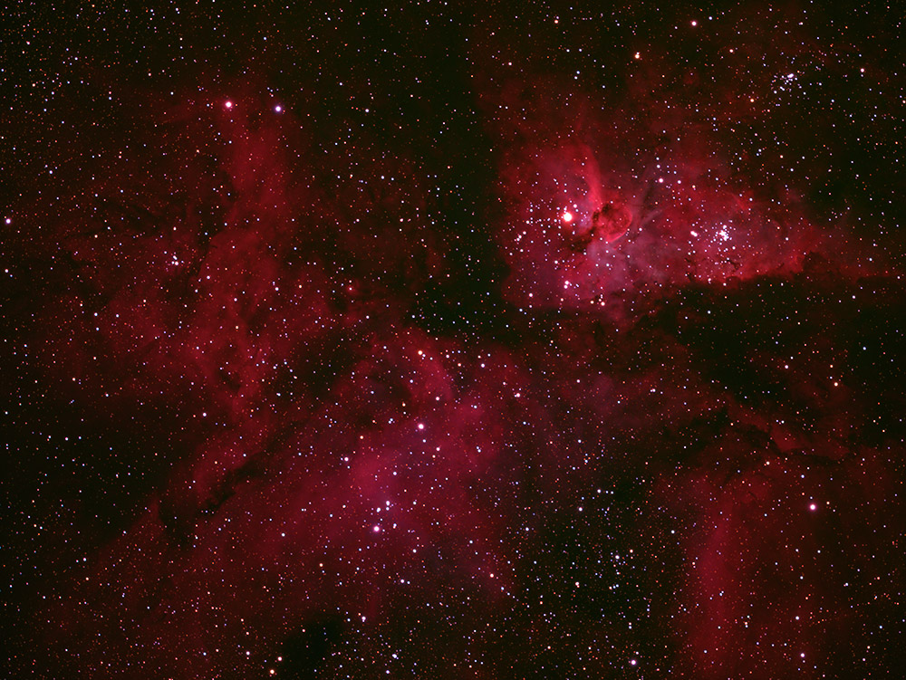
Nebulae
The Carina Nebula
One of my first astronomical photographs: the vast Carina Nebula.
Auckland · New Zealand
Nebulae, galaxies, planets and time-sensitive observations captured from suburban Auckland and remote observatories.
Field notes in light
This collection follows a journey through deep-sky imaging, planetary lucky imaging, photometry and asteroid occultation work. Every image below opens to its original story and full-resolution file.
The collection
Filter the collection by subject, or browse all observations in one responsive gallery.

One of my first astronomical photographs: the vast Carina Nebula.
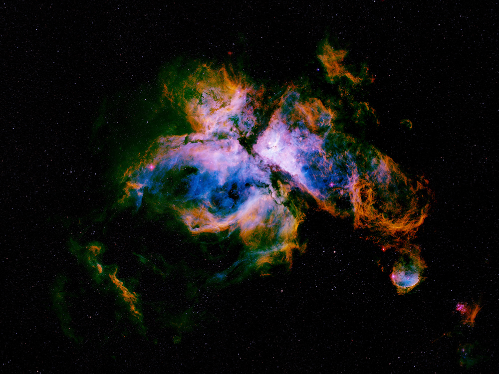
A 170-megapixel, 16-panel mosaic assembled from 839 exposures across seven filters.
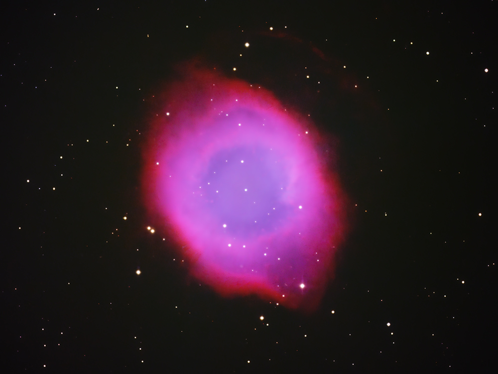
Five-filter imaging of the nearby planetary nebula sometimes called the Eye of Sauron.
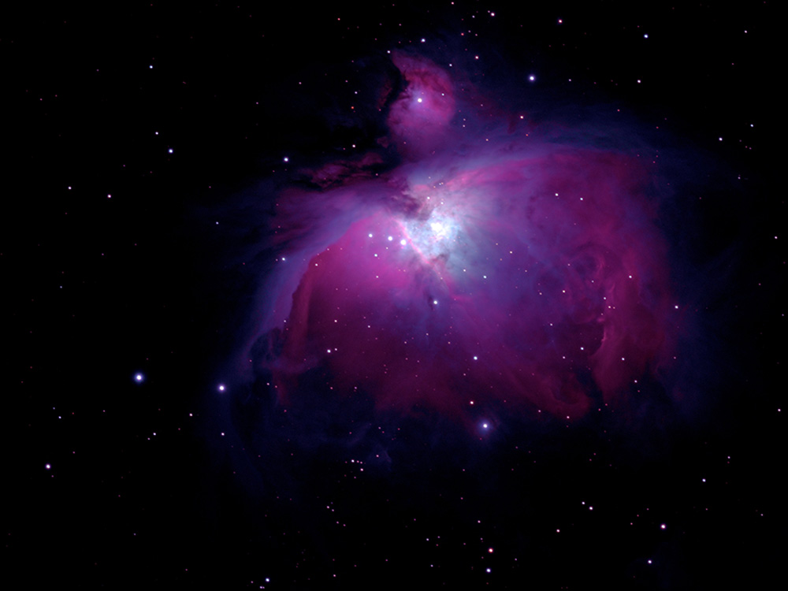
M42, one of the brightest nebulae and the closest massive star-forming region to Earth.
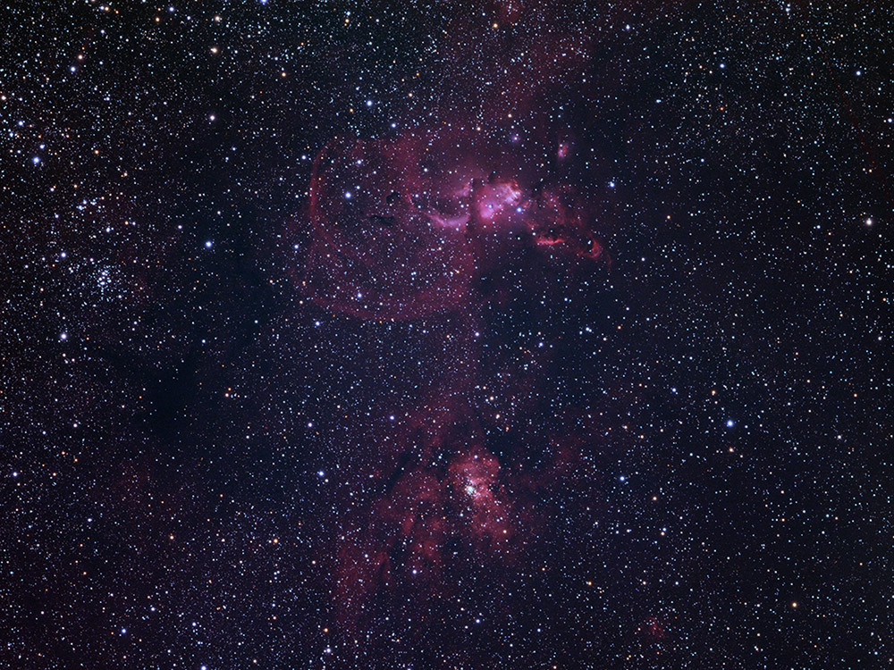
A challenging LRGB and hydrogen-alpha portrait of two southern nebulae.
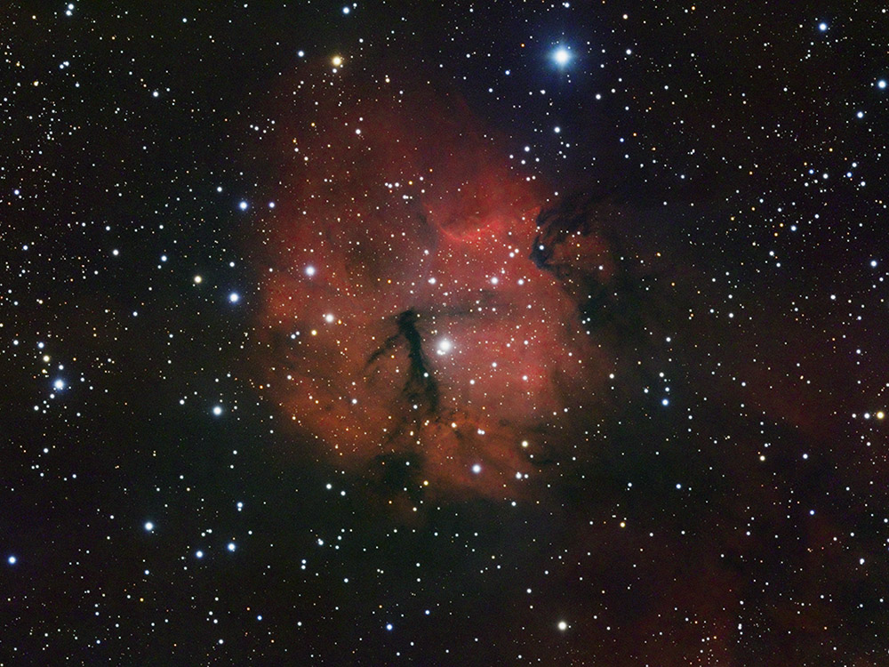
A faint hydrogen-alpha emission nebula in Vela, rich with dust and active star formation.
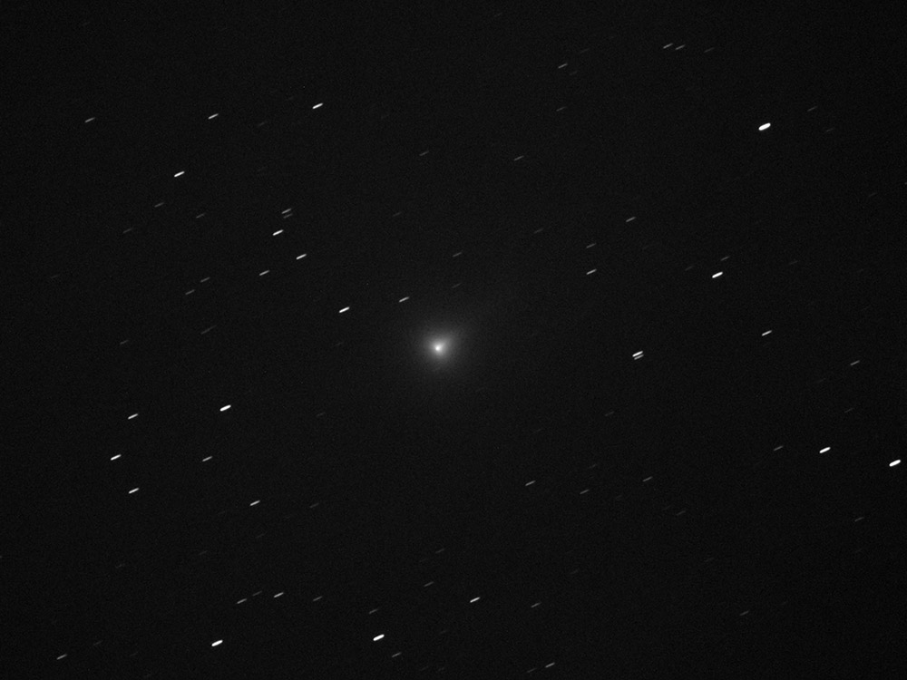
A ten-minute tracked exposure of Comet SWAN from 180 million kilometres away.

Two lucky-imaging studies showing Jupiter, the Great Red Spot, Io and its shadow.
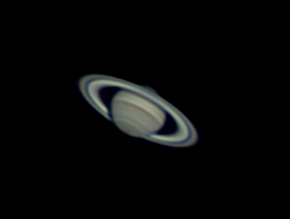
A planetary portrait with the Cassini Division clearly visible in Saturn's rings.
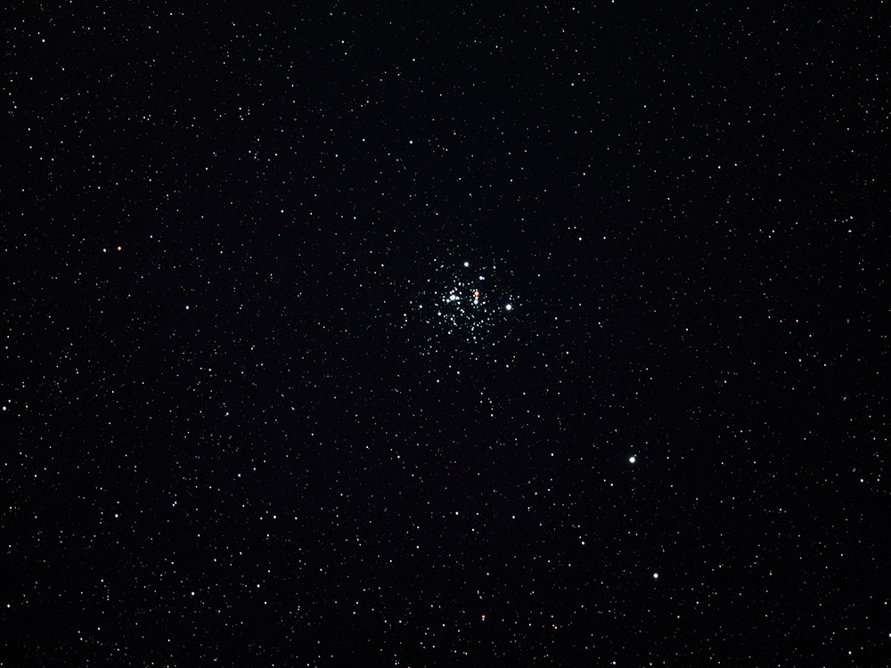
My first astronomical photograph, showing one of the youngest known open clusters.
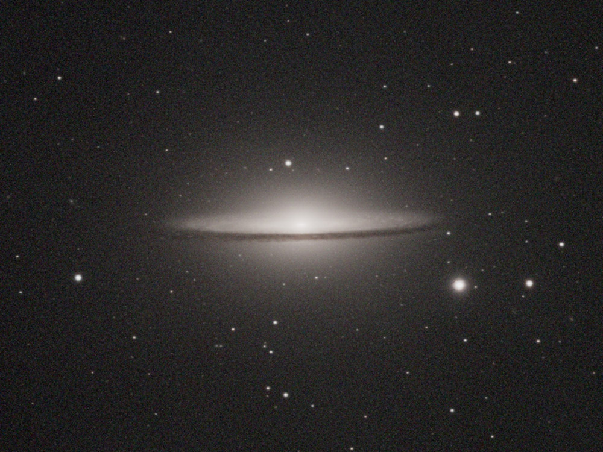
M104, a lenticular galaxy 31 million light-years away with a striking dust lane.
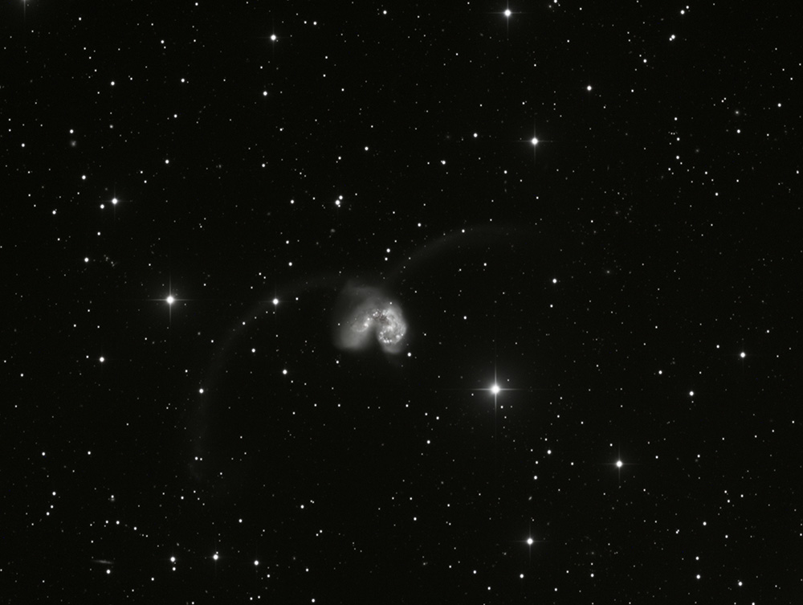
NGC 4038 and NGC 4039 caught in a collision and a burst of new star formation.
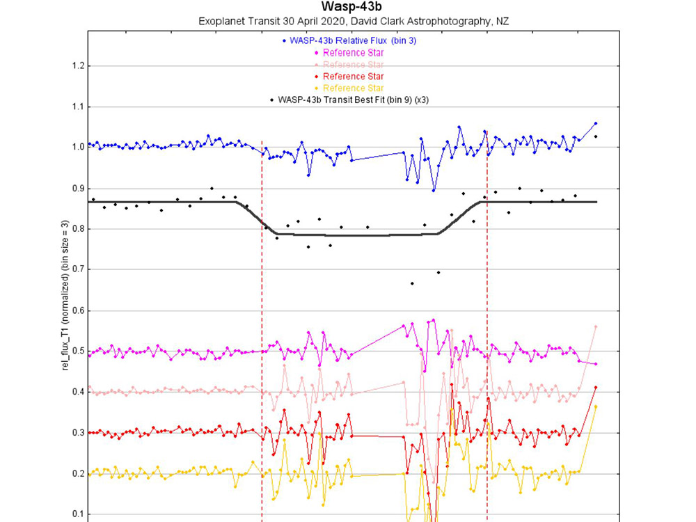
A backyard detection of an exoplanet transit using differential photometry.
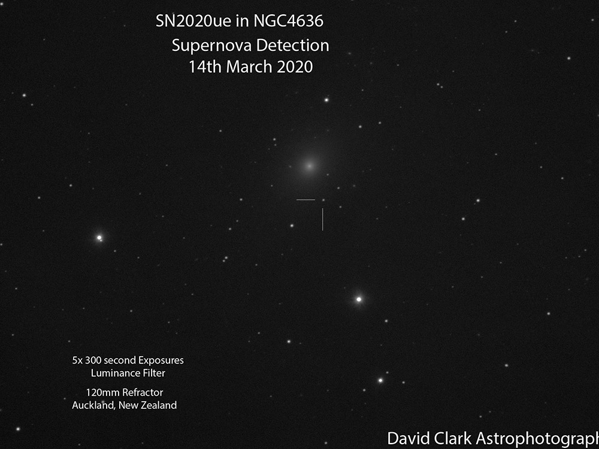
An image of the newly discovered supernova SN 2020ue.

A 7.75-second stellar occultation used to refine the orbit and shape of an asteroid.